眠月線石猴行

2026 年 11/4（三）– 11/6（五）
4 人，台北出發，全程大眾運輸
第 0 天夜宿嘉義火車站旁，第 1 天 07:10 台灣好行上山走到石猴車站過夜，第 2 天出線搭好行 A 線直達高鐵嘉義站回台北。
- 入區許可
- 一葉蘭保留區 × 2 天
- 協作
- 布農卡里布灣（供餐、紮營）
- 步行里程
- 約 7.8 km × 2
- 營地海拔
- 2,318 m
- 夜間氣溫
- 約 5–7 °C
- 天亮／天黑
- 06:00／17:15
進線後大多沒訊號。出發前請把這頁存到手機（瀏覽器選單「列印 → 存成 PDF」），或把行程和時刻表截圖。
Day 0台北 → 嘉義11/4 週三
晚上先下嘉義，睡火車站旁，第一天才趕得上 07:10 的好行 B 線。
- 台北站搭高鐵 673 車次南下建議19:50 到高鐵嘉義站。
- 轉公車 7211 往嘉義後站憑高鐵票根免費，約 25–30 分鐘。
- hostel 入住、夜市晚餐順便買好隔天的午餐。
- 就寢
替代：台鐵自強號直達嘉義火車站，約 3 小時 30 分。
Day 1嘉義 → 阿里山 → 石猴11/5 週四
- 起床、早餐
- 7322C 好行 B 線發車
- 抵阿里山轉運站買門票、裝水，搭遊園車到沼平（約 10 分鐘）。
- 沼平車站出發
- 十字分道，進眠月線沼平到這裡走塔山步道木棧道，不走祝山線鐵軌。
- 大崩壁一次一人通過。
- 塔山車站，午餐吃前一晚在嘉義買好的午餐。
- 第 22 號橋附近山壁有活水，需要的話在這裡裝水。
- 眠月車站
- 抵石猴車站，與協作會合
- Chill time看石猴岩、取水。
- 晚餐
- 就寢
Day 2石猴 → 阿里山 → 台北11/6 週五
- 起床
- 石猴出發回程
- 大崩壁
- 回到沼平車站午餐、休息。
- 7329 好行 A 線往高鐵嘉義站建議17:10 到站。
- 高鐵 666 車次北上
- 回到台北
沿線景點
眠月線舊名塔山線，1915 年為了運出巨木而建，塔山站曾是日本帝國鐵道的最高點。1978 年伐木結束、1983 年轉作觀光，1999 年 921 地震幾乎全線崩毀後不再復駛，留下 12 座隧道與 24 座橋樑。「眠月」二字來自 1906 年阿里山之父河合鈰太郎在此露宿賞月，後來重遊時寫下「眠月」紀念。里程依 OpenStreetMap 軌道與沿線里程牌推算，自沼平起算；時間為第一天去程預估。
- 0 km10:00
沼平車站
海拔 2,274 m，阿里山最老的車站，伐木時期的聚落中心。旁邊的沼平公園是看夕陽與雲海的好位置，第二天若有時間可以繞一下。
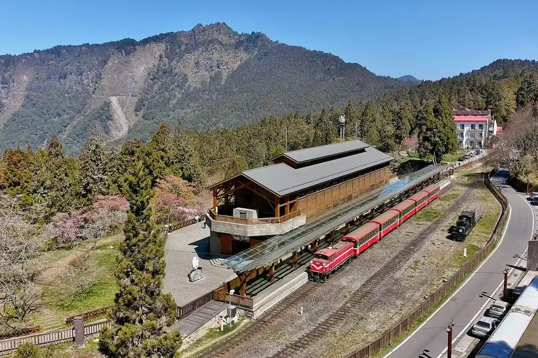
沼平車站與後方的塔山山脈。照片：Wikimedia Commons，CC BY 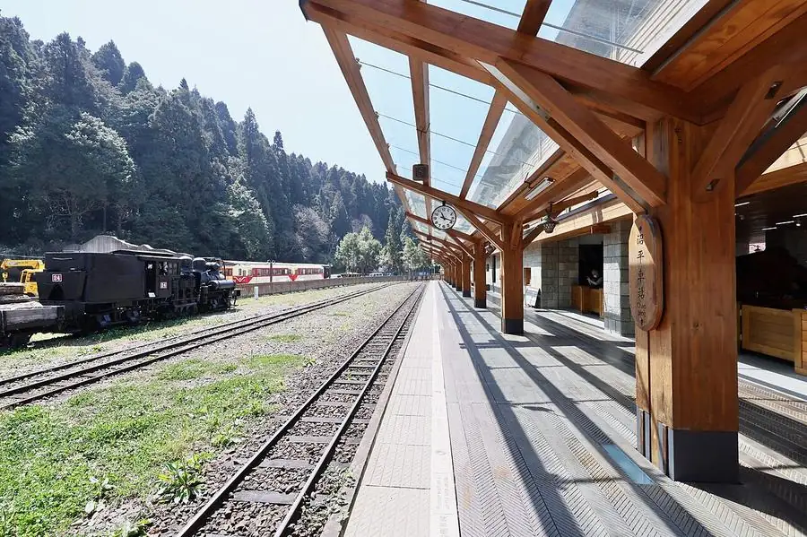
沼平車站月台與停放的蒸汽機車。照片：Wikimedia Commons，CC BY - 1.7 km10:30
十字分道與眠月線入口
從沼平車站跟著「塔山步道」指標走木棧道，不要走祝山線鐵軌（仍在營運，走鐵軌違法）。到十字分道，祝山線與眠月線在這裡分岔，壞掉的黃色柵欄就是眠月線入口，也是整條線第一個提醒你「這是廢線」的地方。
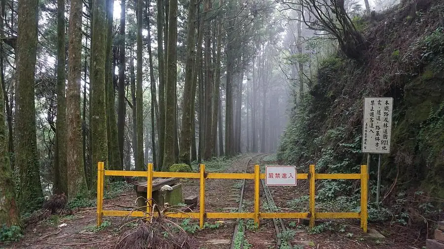
入口的黃色柵欄與 921 告示。照片：Felix Filnkoessl，Wikimedia Commons，CC BY-SA 2.0 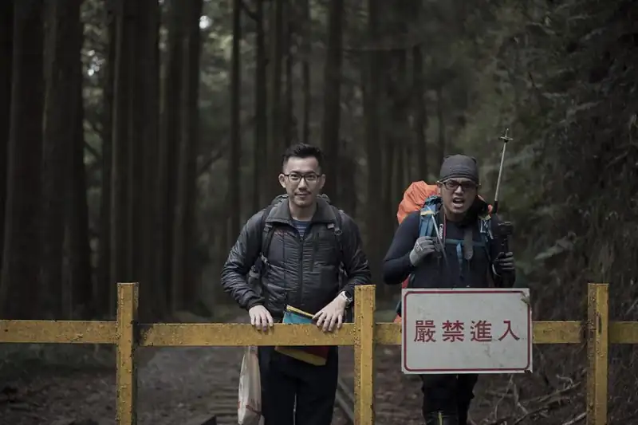
柵欄前的嚴禁進入告示，從旁邊繞過就進線。照片：Sam's Photography Life，Flickr，CC BY-NC-SA 2.0 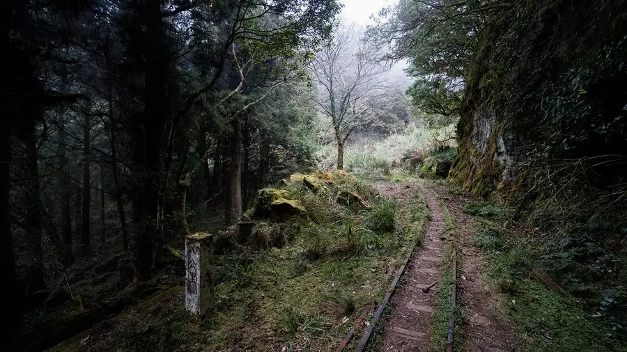
入口段緊貼山壁的舊軌，午後起霧的樣子。照片：Gmoz.TW，Flickr，CC BY-NC 2.0 - 3.3 km11:00
大崩壁與明隧道
921 與八八風災後留下的崩塌地，鐵道在這裡完全消失，改走山壁上的鐵鍊與踩點，需手腳並用。一次一人，走完回頭看整片崩壁很震撼。崩壁前後是有柱無牆的明隧道，光線斜射進來很好拍。
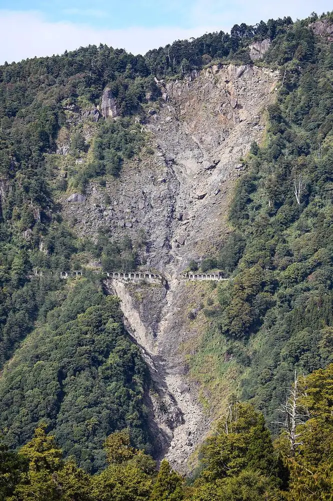
從對面看大崩壁，明隧道被崩塌地截成兩段。照片：bryan，Wikimedia Commons，CC BY-SA 2.0 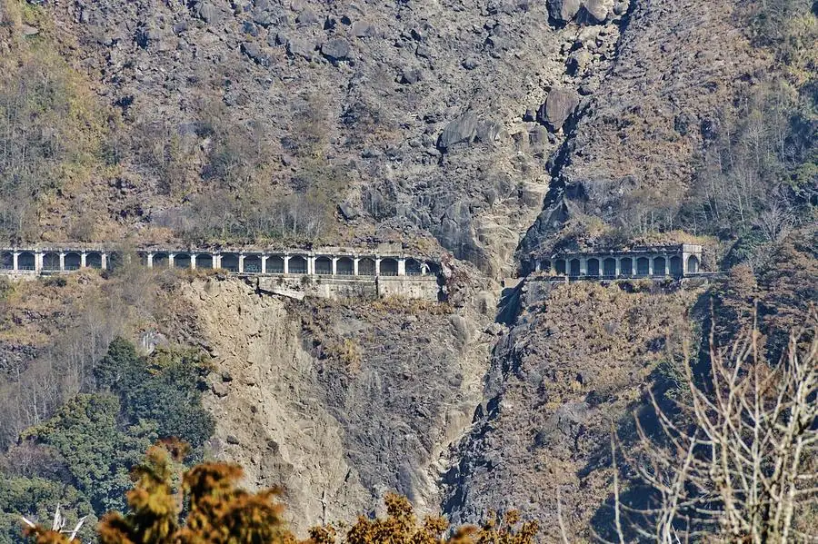
拉近看斷開的明隧道，中間就是要手腳並用通過的地方。照片：Industrial Wales，Wikimedia Commons，CC BY-SA 2.0 - 3.9–4.4 km11:30
隧道群與塔山車站
連續幾座全黑的長隧道，頭燈必開。出來後是海拔 2,346 m 的塔山車站，木造岸式月台仍在，很多人在此紮營。塔山是鄒族的聖山，傳說是祖靈的歸處。
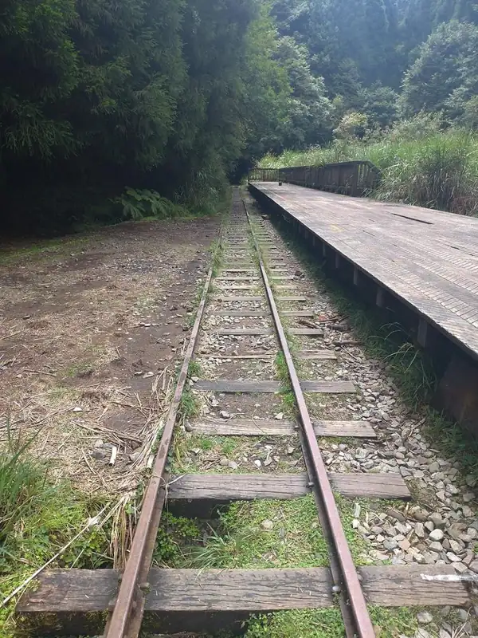
塔山車站的木造岸式月台。照片：Kumki995，Wikimedia Commons，CC BY-SA 4.0 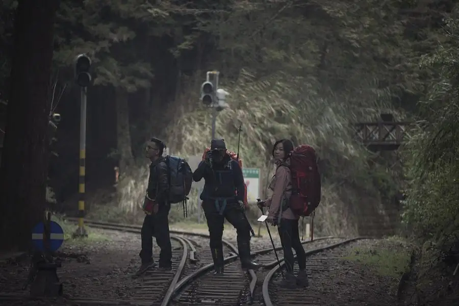
隧道出口，軌道在這裡分岔。照片：Sam's Photography Life，Flickr，CC BY-NC-SA 2.0 - 4.8–6.3 km12:00
高空鐵橋群
眠月線最經典的畫面。24 座橋中以第 11、15、19 號最漂亮，橋面只剩枕木與鋼架，兩側無護欄，下面就是柳杉林。踩枕木不踩軌，濕滑時放慢。
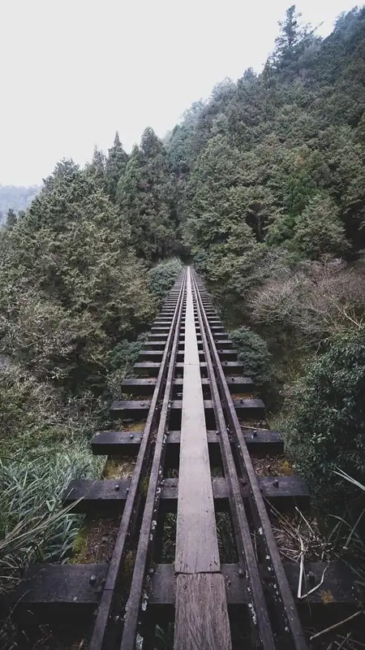
鐵橋直直穿進柳杉林，只剩枕木與鋼架。照片：Gmoz.TW，Flickr，CC BY-NC 2.0 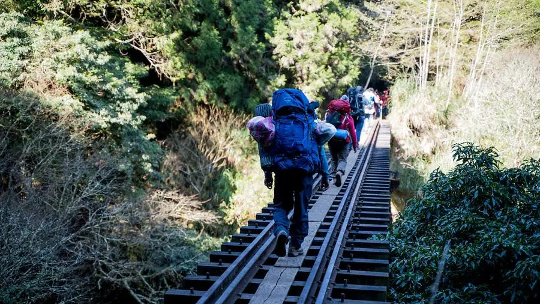
隊伍走在無護欄的高空鐵橋上。照片：Gmoz.TW，Flickr，CC BY-NC 2.0 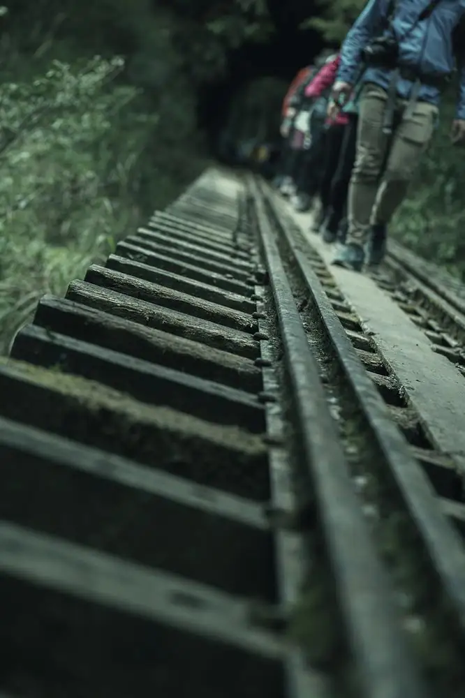
枕木間隙看得到下面，踩穩再走。照片：Sam's Photography Life，Flickr，CC BY-NC-SA 2.0 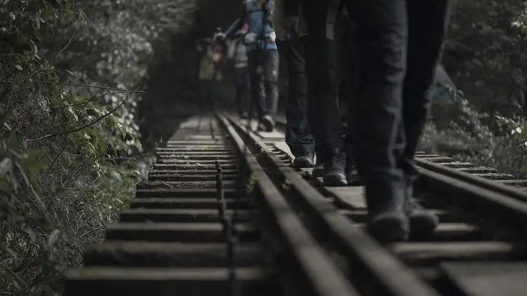
橋面枕木的間距與腳步。照片：Sam's Photography Life，Flickr，CC BY-NC-SA 2.0 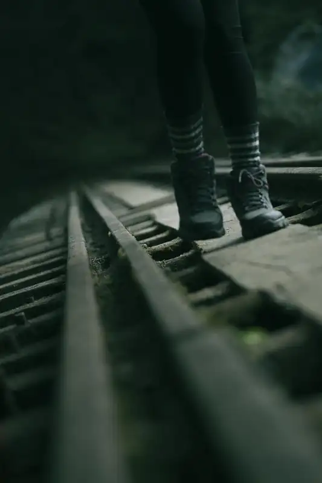
鐵橋上的落腳點。照片：Sam's Photography Life，Flickr，CC BY-NC-SA 2.0 - 6.3 km13:00
第 22 號橋與唯一水源
第 22 號橋長 51.8 公尺，是眠月線最高的高架橋，也是全線天際展望最好的地方。第 22 與 23 號橋之間有活水從山壁流下，是靠近石猴唯一的取水點。若協作不揹水，在這裡把水袋裝滿再進營地。
- 6.9 km13:30
眠月車站
舊眠月站與檢查哨遺跡，離石猴不到 1 公里，是進營地前最後一個像樣的休息點，之後只剩第 23、24 號橋。午後起霧時像走進雲裡。
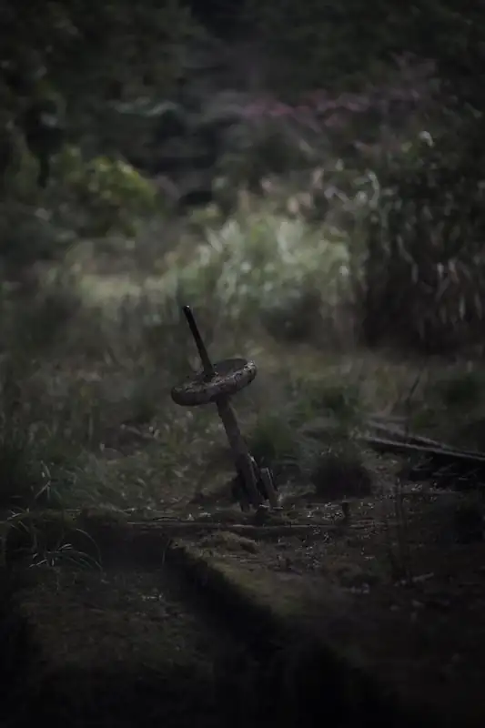
眠月站附近荒草裡的舊轉轍器。照片：Sam's Photography Life，Flickr，CC BY-NC-SA 2.0 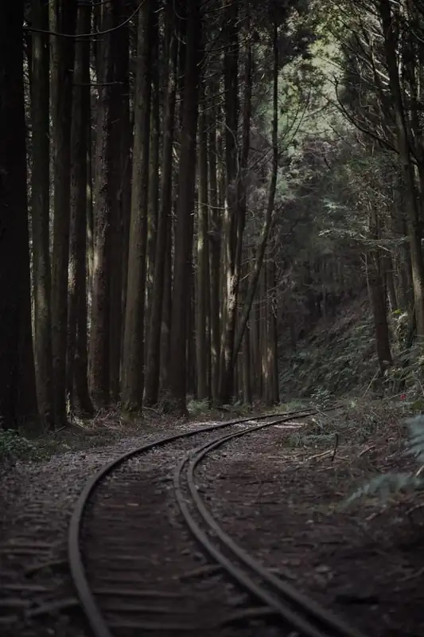
站區前後的彎道軌道。照片：Sam's Photography Life，Flickr，CC BY-NC-SA 2.0 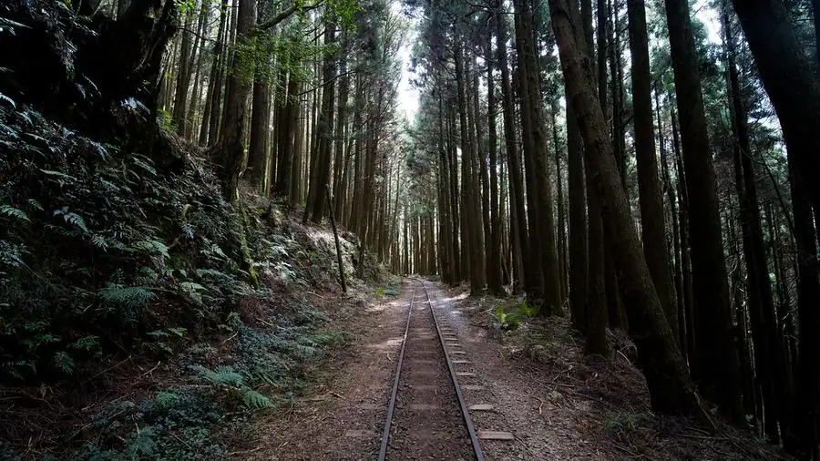
柳杉林中的直線段。照片：Gmoz.TW，Flickr，CC BY-NC 2.0 - 7.8 km14:00
石猴車站與石猴岩
終點，海拔 2,318 m。站名來自一塊像猴子的巨岩，921 地震時猴頭被落石擊中滾入清水溪，現在只剩身體。車站建物已傾斜、廁所坍塌，紮營請用旁邊的觀景台。整區在柳杉林裡沒有展望，觀景台當年是看石猴岩用的，現在只剩小桌椅；想看天色回第 22 號橋。
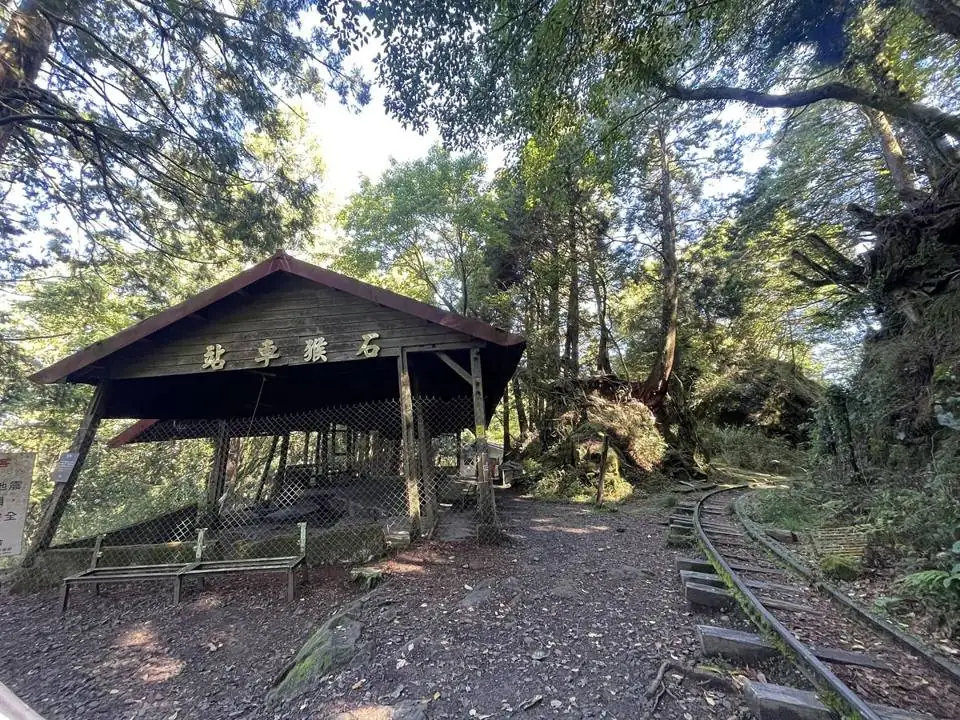
現在的石猴車站，木造站房旁就是繼續延伸的舊軌。照片：Cathy200008，Wikimedia Commons，CC BY-SA 4.0 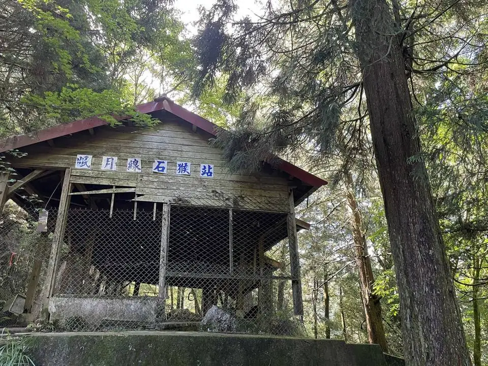
站房上手貼的「眠月線石猴站」站名。照片：Cathy200008，Wikimedia Commons，CC BY-SA 4.0 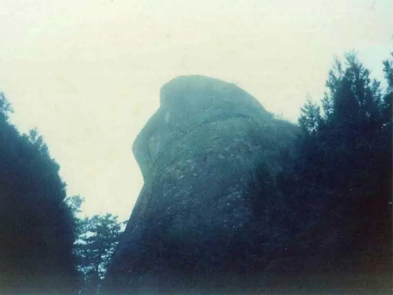
1988 年的石猴岩，猴頭當時還在。照片：Teng Feng-Chou，Wikimedia Commons，CC BY-SA 3.0
背景故事
塔山線到眠月線：一條運木鐵道的興衰
眠月線原名塔山線，1913 年起開發、1915 年通車，是日治時期為運出阿里山巨木而闢建的阿里山鐵路支線，起自舊阿里山站（今沼平車站），經塔山站、眠月站，終點石猴站，全長約 9.3 公里。1978 年伐木結束後一度荒廢，1983 年整理成觀光步道對外開放。1999 年 921 大地震造成路基多處崩塌，修復後短暫恢復通車，卻又遇上 2009 年八八風災二度重創，主管機關評估後決定不再修復，從此封閉至今，只留下 12 座隧道、24 座橋樑與滿山芒草見證這段鐵道歲月。
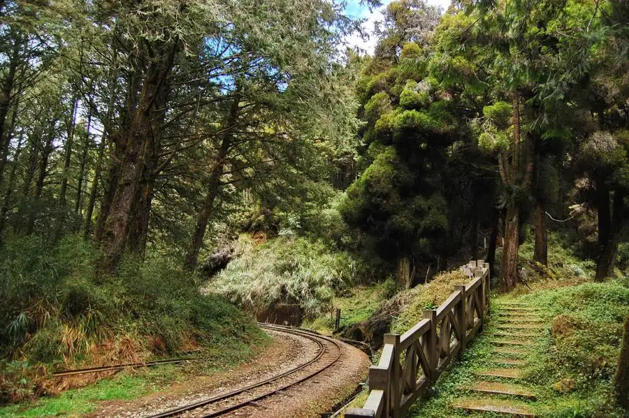
「眠月」二字的由來
眠月站附近曾有一顆平整的巨石。1906 年，日本森林學家河合鈰太郎為勘查阿里山林場來到此地，夜宿在這塊巨石上，抬頭見明月高掛樹梢，心醉不已。1919 年他再度造訪，眼前卻已是砍伐殆盡的林地，古木不再，他感慨寫下「斧斤走入翠微岑，伐盡千年古木林，枕石席苔散無跡，鳴泉當作舊時音」，並將此地命名為「眠月」，紀念當年月下露宿的美好時光——也留下一絲對伐木開發的複雜心情。
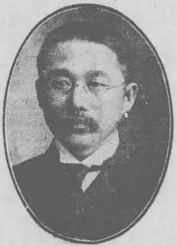
塔山：鄒族的聖山
塔山是鄒族心目中的聖山，傳說人死後，善良的靈魂會回到塔山棲息，作惡的靈魂則被打入一旁的小塔山，因此鄒族人向來不輕易靠近這座山，以示對祖靈與神明的敬畏。也有一則鄒族傳說，講述陰間塔山的男子與陽世女子相戀，兩人克服陰陽阻隔決定共組家庭、生兒育女，往來陰陽兩界直到白頭偕老。健行經過塔山車站時，不妨想想這座山在鄒族文化裡的重量。
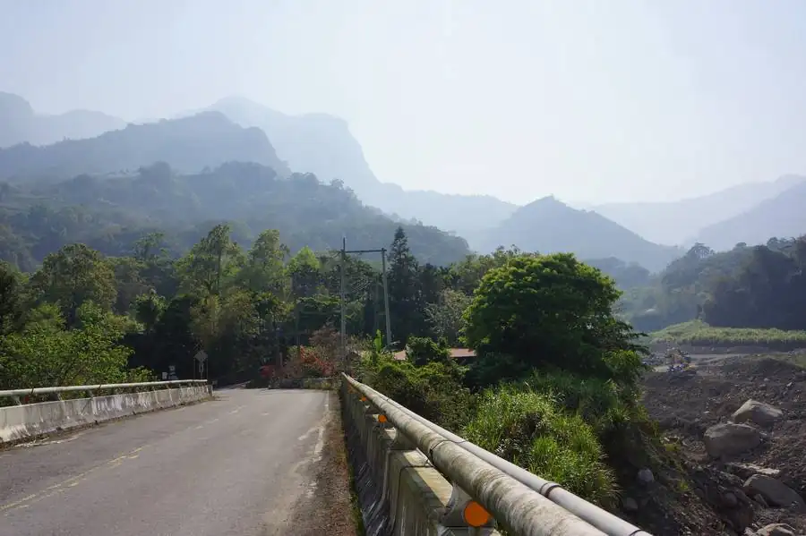
石猴岩：被鋸斷手臂與震落頭顱的巨猴
眠月線終點旁曾矗立一塊高約 31 公尺、直徑約 9 公尺的巨岩，形似一隻蹲坐凝望遠方的獼猴，因此得名「石猴」，換個角度看又像達摩盤坐，也有人稱它「達摩岩」。相傳石猴下方原本還有一段突起如猴臂的岩石，日本人開闢鐵路時將它鋸斷，之後曾有獵人在深夜聽見石猴一帶傳出猴子的淒厲哀鳴，故事因此更添神秘色彩。1999 年 921 大地震，石猴的頭部應聲斷裂滾落清水溪，整座岩體一夜矮了三、四公尺，只留下身軀蹲坐至今，成為這條廢線最讓人唏噓的地標。
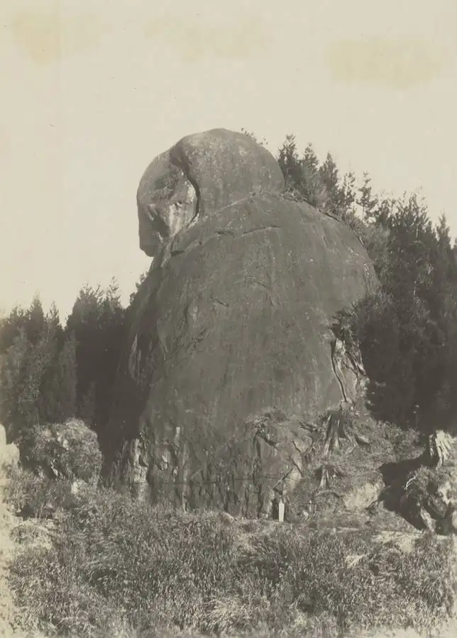
高鐵時刻表
2026/2/2 起常態時刻表，只列每日行駛且停靠嘉義的班次；標示「加班車」者僅特定日行駛，訂票時再確認。台北–嘉義標準車廂對號 1,080 元、自由座 1,045 元，早鳥最低 65 折。
11/4 三 · 南下 台北 → 嘉義（傍晚至晚間）
| 車次 | 台北發 | 板橋 | 台中 | 嘉義到 | 備註 |
|---|---|---|---|---|---|
| 845 | 17:11 | 17:19 | 18:17 | 18:55 | 各站停 |
| 667 | 17:21 | 17:29 | 18:25 | 18:50 | |
| 669 | 17:46 | 17:55 | 18:48 | 19:14 | |
| 849 | 18:11 | 18:19 | 19:17 | 19:55 | 各站停 |
| 673 | 18:21 | 18:29 | 19:25 | 19:50 | 建議 |
| 675 | 18:46 | 18:55 | 19:48 | 20:14 | |
| 1327 | 19:01 | — | 19:54 | 20:29 | 加班車，特定日行駛 |
| 853 | 19:11 | 19:19 | 20:17 | 20:55 | 各站停 |
| 679 | 19:21 | 19:29 | 20:25 | 20:50 | |
| 681 | 19:46 | 19:55 | 20:48 | 21:14 | |
| 857 | 20:11 | 20:19 | 21:17 | 21:55 | 各站停 |
| 1685 | 20:21 | 20:29 | 21:25 | 21:50 | 加班車，特定日行駛 |
1xx、2xx 直達車不停嘉義。到高鐵嘉義站後轉快捷公車 7211 到嘉義火車站約 25–30 分鐘。
11/6 五 · 北上 嘉義 → 台北（下午至晚間）
| 車次 | 嘉義發 | 台中 | 板橋 | 台北到 | 備註 |
|---|---|---|---|---|---|
| 838 | 16:00 | 16:36 | 17:32 | 17:42 | 各站停，13:30 好行 A 線 16:00 才到站，接不上 |
| 658 | 16:08 | 16:32 | 17:25 | 17:36 | 13:30 好行 A 線到站後只有 8 分鐘，太趕 |
| 1320 | 16:19 | 16:53 | 17:27 | 17:47 | 加班車，特定日行駛 |
| 660 | 16:32 | 17:00 | 17:51 | 18:02 | 接 13:30 好行 A 線 |
| 842 | 17:00 | 17:36 | 18:32 | 18:42 | 各站停 |
| 664 | 17:08 | 17:32 | 18:25 | 18:36 | |
| 1322 | 17:19 | 17:53 | 18:27 | 18:47 | 加班車，特定日行駛 |
| 666 | 17:32 | 18:00 | 18:51 | 19:02 | 建議，接 14:40 好行 A 線 |
| 846 | 18:00 | 18:36 | 19:32 | 19:42 | 各站停，接 14:40 好行 A 線 |
| 670 | 18:08 | 18:32 | 19:25 | 19:36 | 接 14:40 好行 A 線 |
| 1324 | 18:19 | 18:53 | 19:27 | 19:47 | 加班車，特定日行駛 |
| 672 | 18:32 | 19:00 | 19:51 | 20:02 | |
| 850 | 19:00 | 19:36 | 20:32 | 20:42 | 各站停 |
| 676 | 19:08 | 19:32 | 20:25 | 20:36 | |
| 678 | 19:32 | 20:00 | 20:51 | 21:02 | 接 16:40 好行 A 線備援 |
| 854 | 20:00 | 20:36 | 21:32 | 21:42 | 各站停 |
| 684 | 20:32 | 21:00 | 21:51 | 22:02 |
公車時刻表
快捷公車 7211 · 朴子轉運站 → 高鐵嘉義站 → 嘉義市轉運中心（後站）→ 嘉義公園
| 朴子轉運站發車（晚間） | |||||
|---|---|---|---|---|---|
| 18:00 | 18:20 | 18:40 | 19:00 | 19:20 | 19:40 |
| 20:00 | 20:20 | 20:40 | 21:00 | 21:30 | 22:00 |
| 22:30 | 23:00 | 23:30 末班 | |||
19:50 到站可接 19:40 朴子發車（約 20 分後到高鐵嘉義站，再約 10 分到後站）；20:50 到站可接 20:00 或 20:20 發車。每日 06:00–23:30 全日約每 20–30 分一班，持當日當站高鐵票根免費搭乘，此表僅列朴子轉運站發車時刻，實際到高鐵嘉義站時間需另加約 20 分鐘，建議現場以站牌電子看板或嘉義客運 App 動態時刻為準。資料來源：公路客運即時動態資訊網，2026/09/22 查詢。
11/5 四 · 台灣好行 B 線 7322 · 嘉義火車站 → 阿里山轉運站
| 班次 | 嘉義火車站發 | 石棹 | 阿里山到 | 備註 |
|---|---|---|---|---|
| 7322 普通 | 06:05 | 07:40 | 08:40 | 最早，普通公車 240 元，現場排隊 |
| 7322C 好行 | 07:10 | 08:40 | 09:40 | 建議，可線上訂位，251 元 |
| 7322 普通 | 08:10 | 09:40 | 10:40 | |
| 7322C 好行 | 08:40 | 10:15 | 11:10 | |
| 7322C 好行 | 09:10 | 10:45 | 11:40 | |
| 7322D 好行 | 09:40 | 11:15 | 12:40 | 繞駛奮起湖，太晚 |
平假日同一時刻表。中途站為預估時間，山區可能延誤，用台灣好行公車動態查詢即時位置。
11/6 五 · 台灣好行 A 線 7329 · 阿里山轉運站 → 高鐵嘉義站
| 阿里山發 | 高鐵嘉義站到 | 可接高鐵 | 備註 |
|---|---|---|---|
| 10:10 | 13:10 | — | 繞駛奮起湖，走完眠月線趕不上 |
| 12:20 | 約 14:50 | — | 11:30 回沼平後太趕 |
| 13:30 | 16:00 | 16:32 的 660 | 體力好、想早回 |
| 14:40 | 17:10 | 17:32 的 666 | 建議，午餐後從容上車 |
| 16:40 | 19:10 | 19:32 的 678 | 備援 |
全票 283 元。若改回嘉義火車站搭台鐵，B 線回程有 13:40、14:10、14:40、15:10 …，到火車站約 2 小時 30 分。
阿里山園區內接駁 · 阿里山車站 ⇄ 沼平
| 方式 | 上車點 | 時間 | 票價 | 備註 |
|---|---|---|---|---|
| 電動遊園車 沼平線 | 候車總站、遊客中心站 | 約 10 分鐘 | 現場或線上票券，套票 300 元起 | 無固定班次隨到隨開，冬令 08:00–17:00，停沼平公園前 |
| 沼平線小火車 | 阿里山車站 | 6 分鐘 | 100 元 | 09:00 起約每小時一班，可預訂 |
| 步行森之道 | 阿里山車站 | 1.8 km 約 30 分鐘 | 免費 | 平緩木棧道，當熱身也不錯 |
裝備準備清單
協作提供晚餐、早餐、帳篷與睡袋。以下全部自己背，每人約 8–10 kg。
必帶點一下打勾，只存在這支手機
證件
- 一葉蘭保留區許可證紙本（11/5、11/6）
- 身分證
- 現金（門票、遊園車、商店區）
行進
- 登山背包 35–45 L
- 頭燈 + 備用電池
- 登山鞋或雨鞋
- 兩截式雨衣
- 背包防水套或內袋
- 登山杖
衣著
- 羽絨或化纖保暖外套
- 排汗上衣 × 2、快乾長褲
- 毛帽
- 營地保暖褲、厚襪
- 中層刷毛
睡眠與飲食
- 睡墊
- 水 1.5–2 L
- 兩天行動糧、第一天午餐
- 個人碗筷、杯子
- 保溫瓶
衛生與其他
- 垃圾袋
- 衛生紙、小鏟子
- 個人藥品、OK 繃
- 行動電源、充電線
- 離線地圖與 GPX
- 暖暖包
路況重點
- 大崩壁：鐵鍊與踩點，手腳並用，一次一人
- 無護欄鐵橋 24 座，午後起霧濕滑，不趕路
- 踩枕木不踩軌，青苔多
- 進線後手機大多沒訊號
- 前一天預報大雨就改期
資料來源
- 臺灣登山申請一站式服務網
- 台灣高鐵 2026/2/2 起常態時刻表 PDF
- 台灣好行阿里山 B 線 7322 時刻表 PDF
- 台灣好行阿里山 A 線 7329 時刻表
- 阿里山線購票網（好行訂位）
- 阿里山林鐵支線時刻表
- 阿里山電動遊園車 沼平線
- 布農卡里布灣 價目表
- Hikingbook 眠月線全攻略與 GPX
- 京曼度山：眠月線協作行程參考時刻
- 眠月線露營申請與裝備心得
- 微笑台灣：眠月線，封印的鐵道
- TRAVELER Luxe：前進阿里山眠月線
- 公視我們的島：眠月記，阿里山鐵道支線眠月線故事
- 維基百科：眠月石猴
- 報時光：遭遇強震崩塌，阿里山眠月巨大石猴像最後留影
- 環境資訊中心：邁向天神居所，塔山步道
- Wikimedia Commons：眠月線照片（Jāzeps Baško，CC BY 2.0）
- Wikimedia Commons：河合鈰太郎肖像（公有領域）
- Wikimedia Commons：塔山山景（lienyuan lee，CC BY 3.0）
- Wikimedia Commons：1934 年石猴岩老照片（國家攝影文化中心，公有領域）
- Wikimedia Commons：首頁眠月線鐵橋與隧道（Hermes Li，CC BY-SA 4.0）
- Wikimedia Commons：石猴車站現況（Cathy200008，CC BY-SA 4.0）
- Wikimedia Commons：眠月線石猴站站名（Cathy200008，CC BY-SA 4.0）
- OpenStreetMap：眠月線軌道、橋樑與車站位置（© OpenStreetMap 貢獻者，ODbL）
{kind=link}
{kind=link}
{kind=link}
{kind=link}
{kind=link}
{kind=link}
{kind=link}